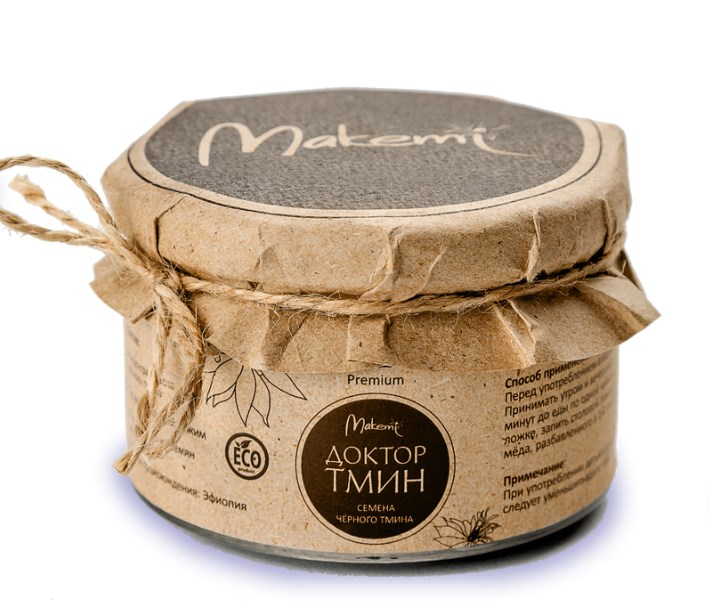

Семена черного тмина 100 гр.
Применение семян растения очень разнообразно. Из них можно делать настои и отвары, измельчать до порошкообразного состояния, а затем смешивать с другими ингредиентами. Также их можно жевать целиком или использовать в качестве наружного средства.
- Эфиопские семена;
- Сертификация;
- Собственное производство.
Товар сертифицирован, соответствует техническому регламенту на масложировую продукцию.